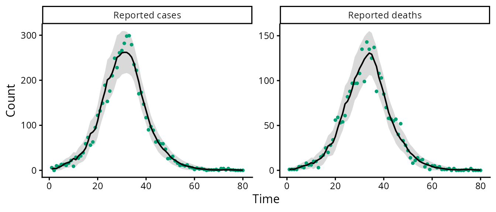

Compartmental models from surveillance counts
Source:vignettes/compartmental-models.Rmd
compartmental-models.RmdThis vignette shows how to declare a stochastic compartmental model, simulate surveillance counts from it and fit it by maximum likelihood under the Gaussian (linear noise) approximation of the Markov jump process.
Declaring a model
A model is a set of compartments and a named list of events. Each
event moves one individual from from to to at
rate rate * x[from] * x[by] (fractions of the population),
or rate * x[from] when by is omitted.
sird <- ga_model(c("S", "I", "R", "D"), list(
infection = ga_event("S", "I", rate = "lambda", by = "I"),
recovery = ga_event("I", "R", rate = "gamma"),
death = ga_event("I", "D", rate = "alpha")))
sird
#> Mass-action compartmental model: S, I, R, D
#> infection S -> I at rate lambda * S * I
#> recovery I -> R at rate gamma * I
#> death I -> D at rate alpha * I
#> Rate parameters: lambda, gamma, alphaObservations
Surveillance counts are increments: new cases and new deaths in each
interval. ga_incidence() counts the firings of an event;
ga_prevalence() counts the members of a compartment at the
end of each interval. Reported counts are a binomial thinning of the
latent counts, with probability prob, plus measurement
error with variance noise times the latent count. Either
argument can be a parameter name or a fixed number.
obs <- list(cases = ga_incidence("infection", prob = "p", noise = "tau2"),
deaths = ga_incidence("death", prob = 1, noise = "tau2_d"))Simulating and fitting
truth <- list(lambda = 0.6, gamma = 0.3, alpha = 0.1, p = 0.5, tau2 = 0.2, tau2_d = 0.1)
set.seed(1)
sim <- ga_simulate(sird, truth, c(S = 19990, I = 10, R = 0, D = 0), obs, n = 80)
colSums(sim$data)
#> incidence_infection incidence_death
#> 5722 2788The initial state is given as a function of the parameters, so that the initial fraction of infectious individuals can be estimated:
init <- function(p) c(S = 1 - p$i0, I = p$i0, R = 0, D = 0)
fit <- ga_fit(sird, sim$data, obs, N = 20000, init = init,
start = list(lambda = 0.5, gamma = 0.25, alpha = 0.15, i0 = 1e-3,
p = 0.6, tau2 = 0.3, tau2_d = 0.3))
fit
#> Gaussian-approximation fit of a 4 compartment model
#> log-likelihood: 1112.5338 (1 start(s))
#> estimate lower upper
#> lambda 0.6292000 0.5709000 0.693500
#> gamma 0.3170000 0.2795000 0.359400
#> alpha 0.0975000 0.0761100 0.124900
#> i0 0.0004313 0.0002739 0.000679
#> p 0.4842000 0.4352000 0.533400
#> tau2 0.2949000 0.1068000 0.814300
#> tau2_d 0.1692000 0.0155800 1.837000
plot(fit, labels = c("Reported cases", "Reported deaths"))
confint() returns Wald intervals computed on the scale
of the optimisation (logarithms, or logits for probabilities and initial
fractions) and transformed back. predict() returns the
one-step-ahead predicted means and standard deviations of the
counts.
Rates that change over time
A rate parameter listed in blocks takes one value per
block of observation intervals. For two transmission rates of 40 days
each:
What the data identify
With cases only, the recovery and death rates enter the likelihood only through their sum, so the death rate is not identifiable. A profile likelihood shows this directly (not run here because each grid point is a complete fit):
cases_only <- sim$data
cases_only[, 2] <- NA
fit_c <- ga_fit(sird, cases_only, obs, 20000, init,
start = list(lambda = 0.5, gamma = 0.25, alpha = 0.15, i0 = 1e-3,
p = 0.6, tau2 = 0.3), fixed = list(tau2_d = 0.1))
ga_profile(fit_c, "alpha", grid = c(0.1, 0.05, 0.02, 0.15, 0.2))Other models
Any mass-action structure can be declared in the same way, for example a SEIRD model with a latent compartment, or a SIRDV model with vaccination observed through the number of doses:
seird <- ga_model(c("S", "E", "I", "R", "D"), list(
infection = ga_event("S", "E", "lambda", by = "I"),
progression = ga_event("E", "I", "sigma"),
recovery = ga_event("I", "R", "gamma"),
death = ga_event("I", "D", "alpha")))
sirdv <- ga_model(c("S", "I", "R", "D", "V"), list(
infection = ga_event("S", "I", "lambda", by = "I"),
recovery = ga_event("I", "R", "gamma"),
death = ga_event("I", "D", "alpha"),
vaccination = ga_event("S", "V", "nu")))